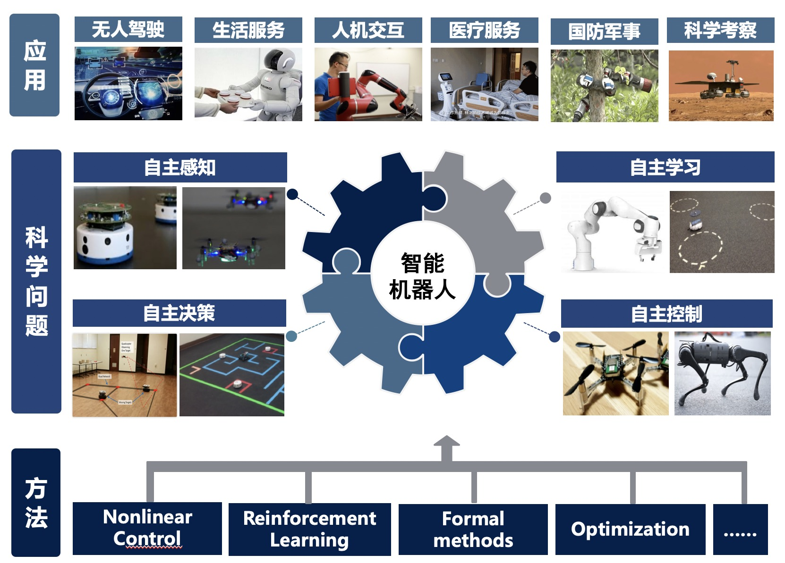

阚震，中国科学技术大学自动化系教授、博士生导师，国家海外高层次（青年）人才计划入选者。2011年12月博士毕业于美国佛罗里达大学（University of Florida）, 2012年至2016年在美国佛罗里达大学和美国空军研究实验室（AFRL）从事博士后研究，2016年至2019年在美国爱荷华大学（The University of Iowa）机械系担任（tenure-track）助理教授。主持承担了多个国家自然科学基金和美国空军科研项目，在IEEE TAC、IEEE TRO、Automatica 等国际权威期刊及会议上发表论文90余篇。担任自控领域旗舰期刊IEEE Transactions on Automatic Control编委，自控领域顶会IEEE American Control Conference (ACC)、IEEE Conference on Decision and Control (CDC)等编委，省部级人才计划、美国科学基金（NSF）等项目评审专家，以及IEEE 控制系统协会下多个技术委员会委员。
机器人智能控制与决策，人机交互与协作、非线性控制理论，多机器人协同控制

- IEEE Transactions on Automatic Control 编委 (Associate Editor)
- IEEE 控制系统协会会议编委会编委
- IEEE American Control Conference (ACC), IEEE Conference on Decision and Control (CDC) 等自动化控制与机器人领域的权威国际会议编委
- IEEE 控制系统协会下Intelligent Control，Nonlinear Systems and Control，Networks and Communications等多个技术委员会委员
- 中国自动化学会控制理论专委会委员
- 中国自动化学会机器人智能专委会委员
- 中国指挥与控制学会智能控制与系统专委会委员
- 中国自动化学会非线性系统与控制学组委员
- IEEE ICRA 国际机器人大赛 (Track：The RoboDepth Challenge), 亚军， 2023
- IEEE International Conference on Advanced Robotics and Mechatronics 最佳论文提名奖，2022
- 新创学者，2021
- 国家级（青年）人才计划项目，2019
- 美国空军夏季学术奖，2018
- 美国爱荷华大学Old Gold学术奖，2017
- “灵巧作业臂-手机器人技能学习与自主发育研究,” 国家重点研发计划(2022YFB4701400)，课题负责人，2023-2025
- “非结构环境下异构多机器人自主智能协作方法研究,” 国家自然科学基金面上项目(62173314)，项目负责人，2022-2025
- “仿生感知、学习、作业及多机器人智能协同关键技术研究及示范应用,” 国家自然科学基金联合基金项目(U2013601)，课题负责人，2021-2024
- “Leader Selection in Complex Networks for Controllability and Energy Efficiency,” 美国空军研究实验室(AFRL)，项目负责人(PI)，7.8万(美元)，2019 (终止)
- "Control-based Optimal Subgraph Detection in Complex Networks," 美国空军研究实验室(AFRL)，项目负责人(PI)，45.1万(美元)，2019-2021 (终止)
- “Maintaining Satellite Coverage in Uncertain Operational Environments via Algebraic Topological Approaches,” 美国空军SBIR，项目负责人(UIowa PI)，5万(美元)，2019-2020 (终止)
每年招收硕士研究生4人，博士研究生2人，欢迎自动化、计算机、应用数学等相关专业的同学加入。态度踏实、数学好，英语好，动手实践能力强的同学将优先考虑。